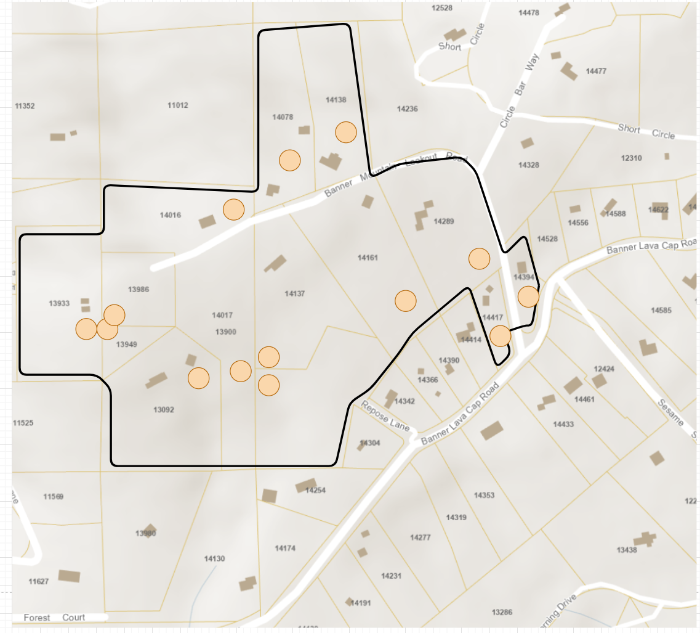
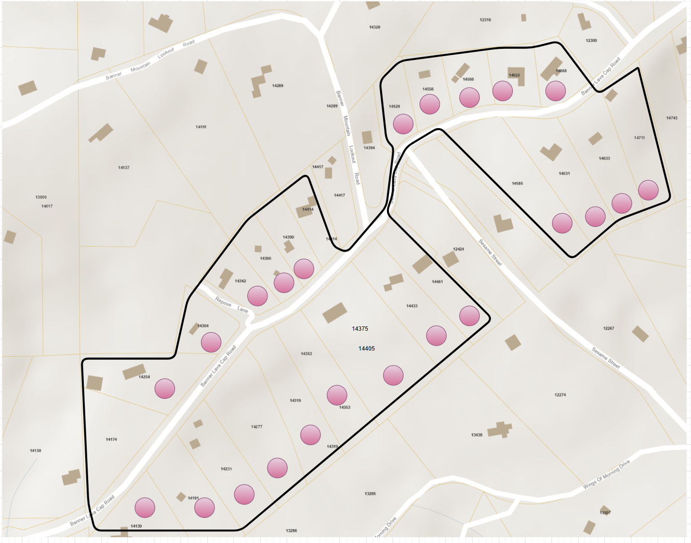
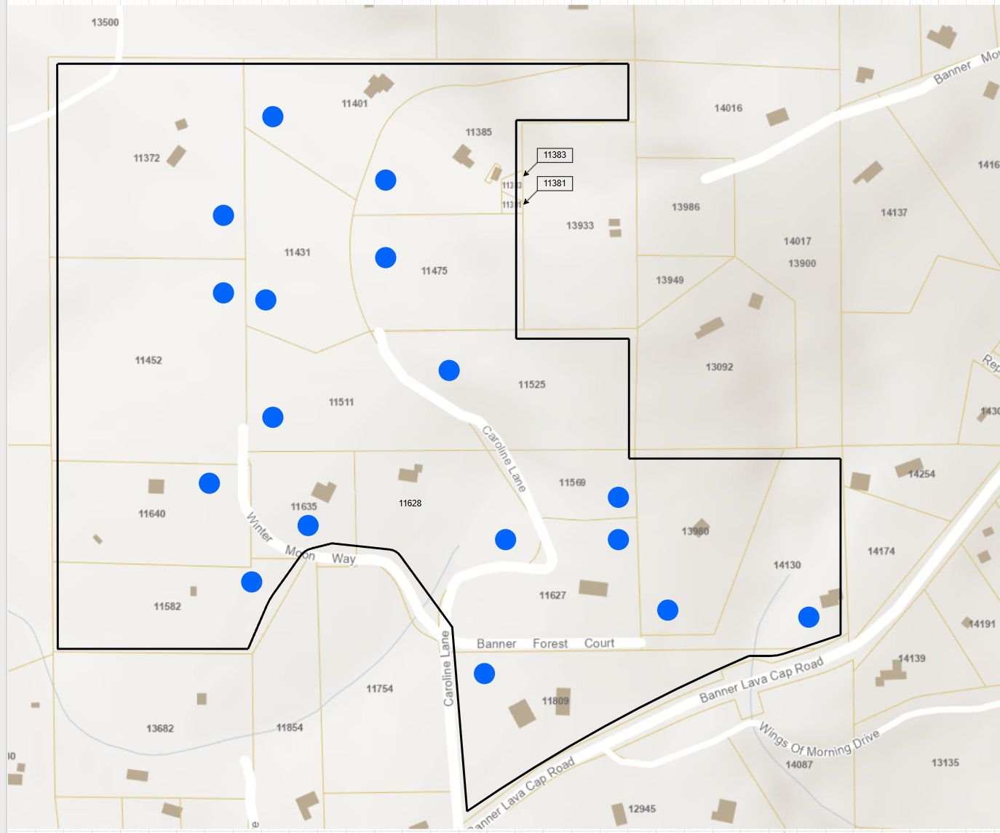
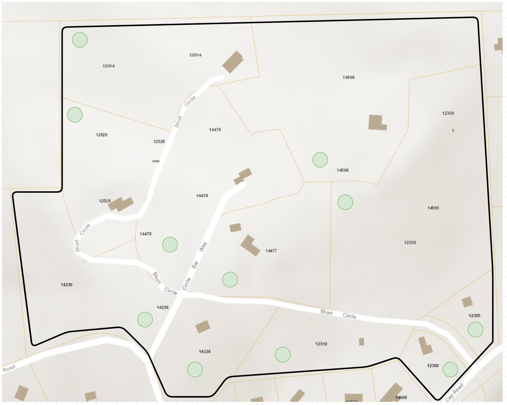

To make the community boundary easier to work with, we've split it into four sub-areas. Each map below highlights the parcels within that section of the Banner Mountain Lookout Firewise Community.
Banner Mountain Lookout Road

Banner Lava Cap Road

Caroline Lane

Short Circle
